ขั้นแรกของการทำ Github page
สร้าง Repository ขึ้นมาโดยกำหนดชื่อที่ต้องการตามด้วย .github.io เช่น example.github.io
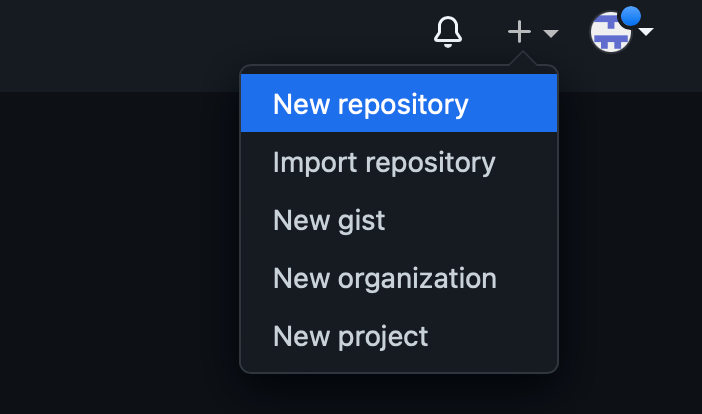หลังจากนั้น ตั้งชื่อ repository แล้วกด create
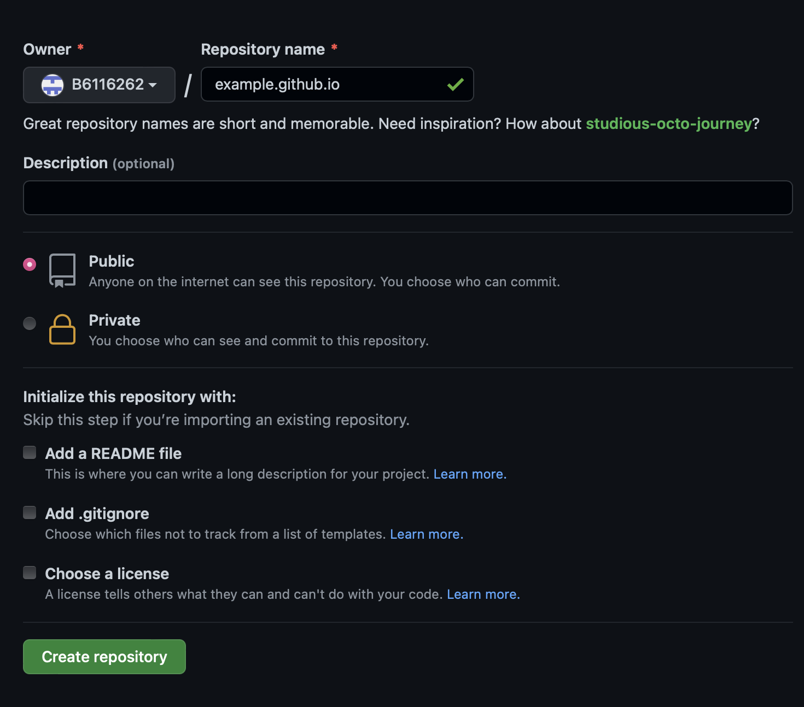หลังจากนั้นไปที่หน้า setting
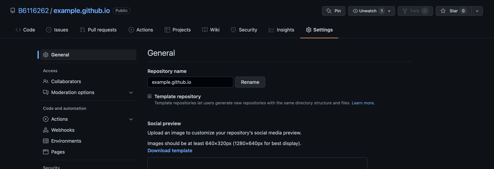เลื่อนลงมาเพิ่อหาคำว่า Github page แล้วกด check it out here!
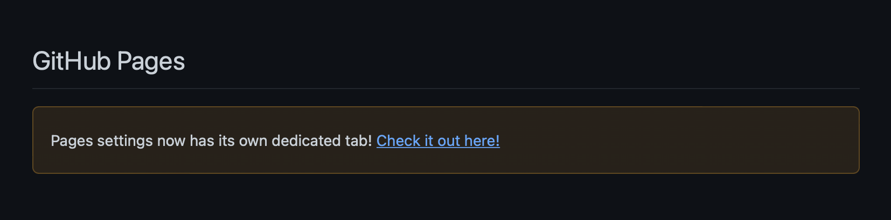เลือกchoose a theme เพื่อเข้าไปเลือก theme ที่เราต้องการ
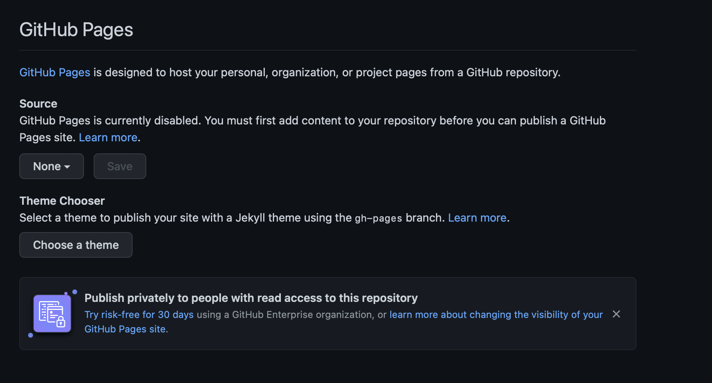ตัวอย่างหน้าตาของ theme ต่างๆ แล้วกด Select theme
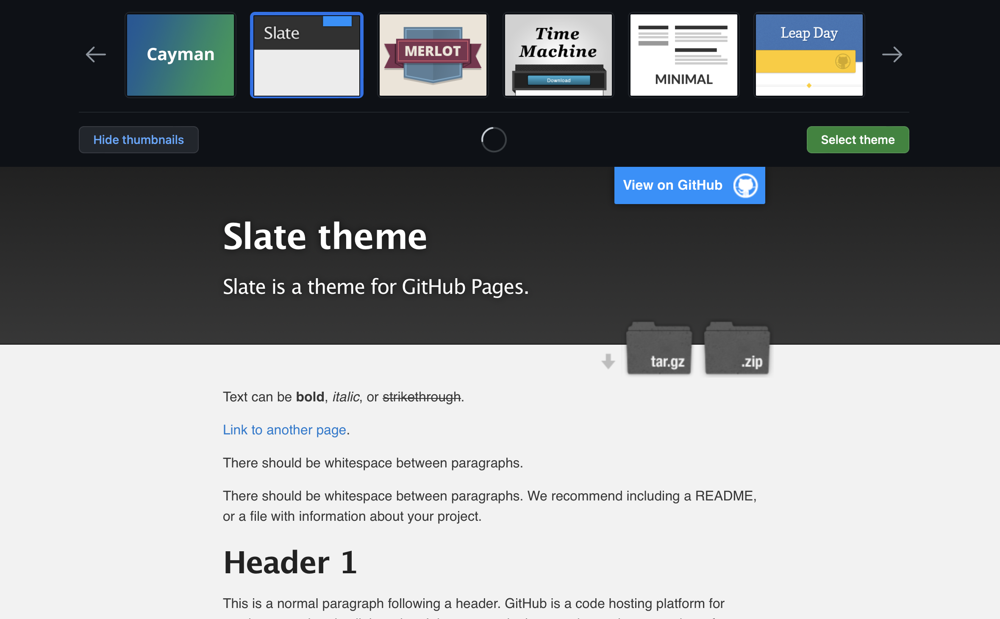หลังจากนั้น Github เราจะทำการสร้างหน้า page เบื้องต้นของเราออกมาให้เราทำการกด commit changes
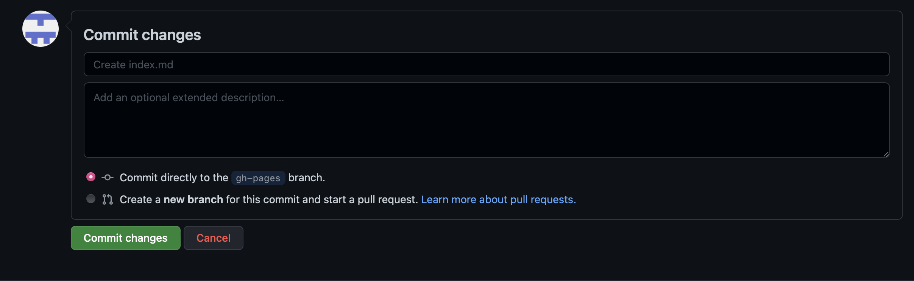หลังจากนั้นกดที่ Setting tab แล้วเลือกเมนูทางด้านซ้ายมือที่ชื่อว่า page จะปรากฎ link ของ Github pages ของเรา
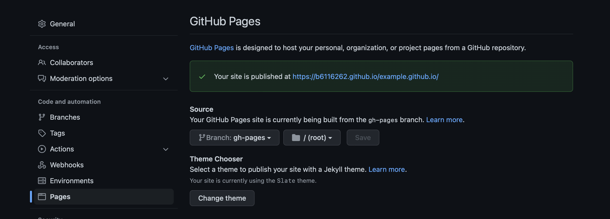และนี่คือหน้าตาของ Github pages ของเรา
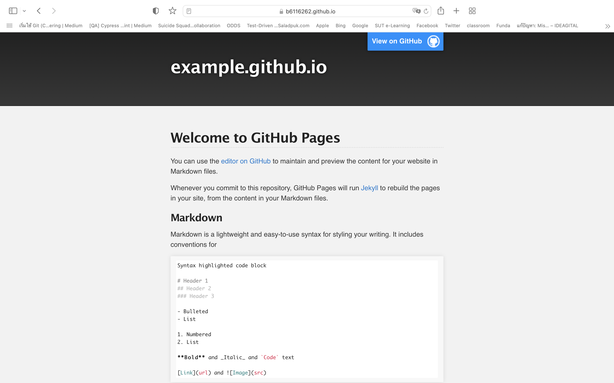เราสามารถทำการ clone project เพื่อมาแก้ไขได้
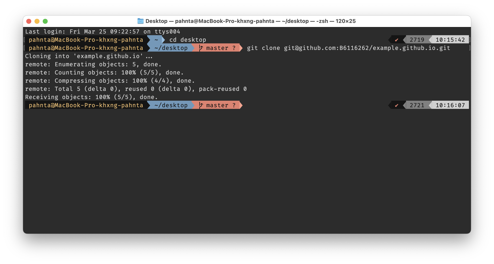 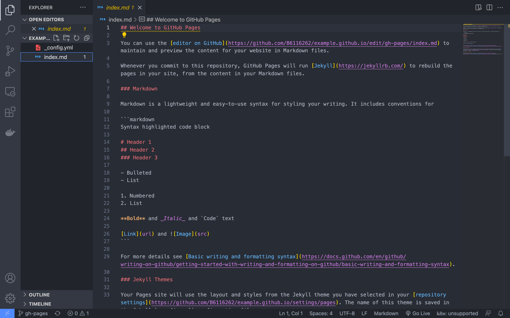